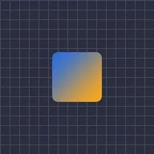

Schaalhulp

Voegt extra schaal toe bovenop de eigen grootte van de laag, langs X, Y, beide, of X met Y andersom. Lagen die eraan gekoppeld zijn, volgen de nieuwe grootte.
Schaalhulp voegt extra schaal toe bovenop de eigen grootte van de laag. Lagen die deze laag als bovenliggende laag hebben, volgen de nieuwe grootte.
- As: X rekt de breedte uit, Y de hoogte en X,Y allebei. X,-Y (standaard) rekt de breedte uit terwijl de hoogte krimpt, voor een squash-and-stretch-effect.
- Schaal is de extra schaal: 100 % verandert niets.
- Demping (alleen bij X,Y en X,-Y) past de hoogte aan. Bij X,Y wordt de hoogte geschaald met Schaal maal Demping; bij X,-Y krimpt de hoogte Demping keer zoveel als de breedte groeit.
Instellingen
| Instelling | Type | Bereik | Standaard |
|---|---|---|---|
| As | Keuze | X, Y, X,Y, X,-Y | X,-Y |
| Schaal | Getal | 0% tot 10000% | 100% |
| Demping | Getal | 0% tot 10000% | 100% |